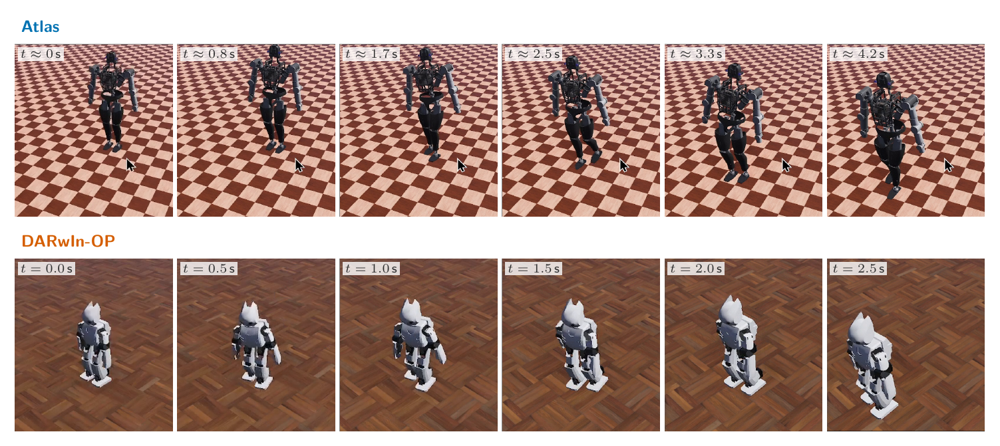
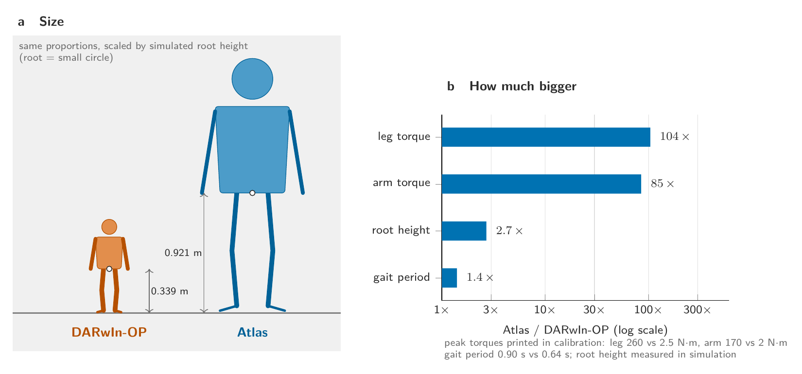
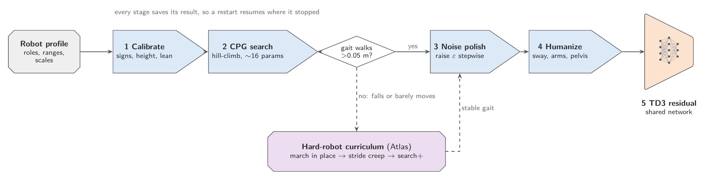
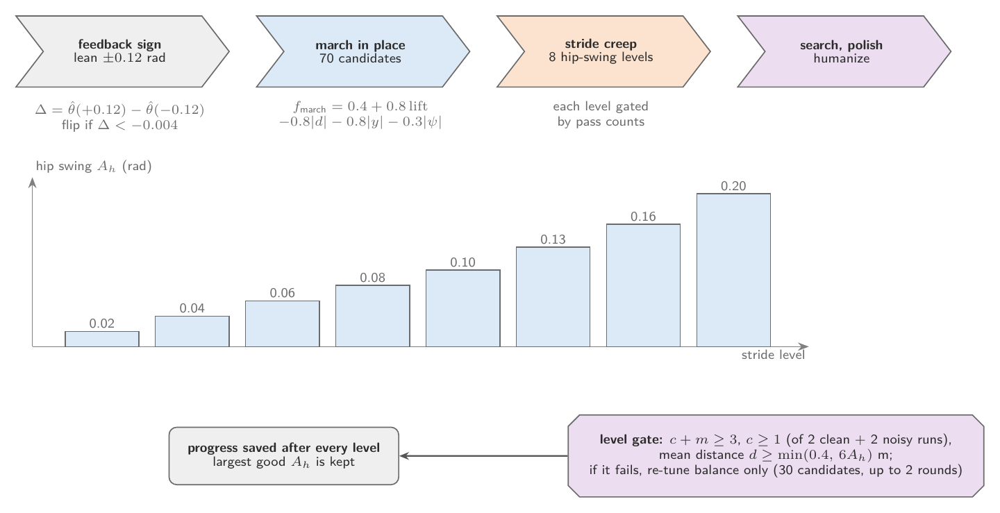
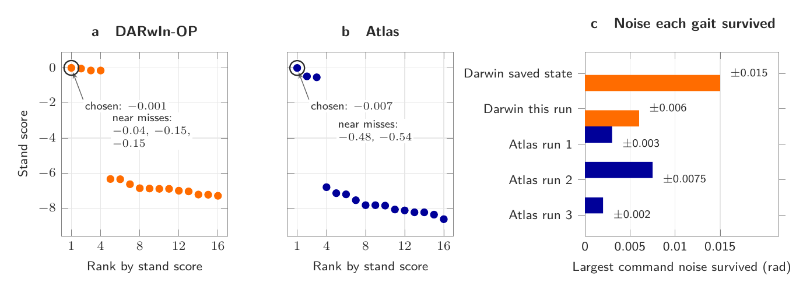
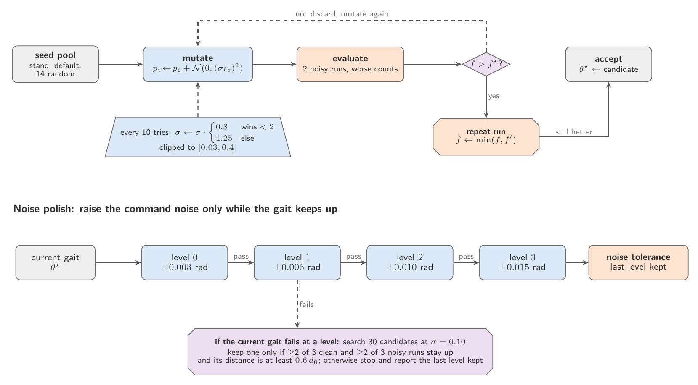
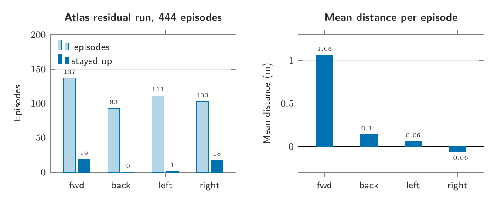

Department of Mechanical Engineering, University of Texas at Dallas

Training a learning-based controller for a new robot is getting harder to do without a large compute budget. We ask how far a small controller can get on a CPU alone.
We describe a single-file controller that uses only the Python standard library. It takes a humanoid in the Webots simulator from nothing to a walking gait: it calibrates joint sign conventions, standing height and lean, searches a parameterised central-pattern-generator (CPG) gait, hardens the gait against command noise, and optionally trains a TD3 residual policy on top. The same pipeline ran on the DARwIn-OP and the Boston Dynamics Atlas.
What has to change when the body changes?
In the simulator Atlas stands 2.7 times higher at the root than the DARwIn-OP (0.921 m against 0.339 m). Its leg joints can exert about 104 times the peak torque seen in calibration (260 against 2.5 N·m), and its arm joints about 85 times (170 against 2 N·m). Even the hip sign convention differs. The gait periods the pipeline ended up using differ by only 1.4 times (0.64 s against 0.90 s).

Every robot goes through the same stages. Hard robots take an extra curriculum.


Screen recordings of the Webots 3D view, cropped to the simulation.
No joint signs were hand-tuned. On the Atlas the chosen sign combination scored −0.007 on the stand trial, against −0.48 for the nearest alternative and −7 to −9 for the rest. Both robots have a few near-miss combinations that also stand, so the score alone does not always single out one answer; the log adds a joint-limit hint to break ties.

A curriculum of march in place, then stride creep, then search produced an Atlas gait that covered 3.06 m in 7.7 s (about 0.40 m/s, 23.7 cm steps). It stayed up in 3 of 3 runs under ±0.003 rad command noise, after 296 candidate gaits (at least 38 simulated minutes; wall-clock time was not logged).

The TD3 residual did not improve on the tuned gait on either robot. In a three-hour Atlas run the forward gait stayed up in 19 of 137 forward episodes, all in the first 44 episodes of the run. We report this as a negative result and discuss likely causes in the paper.

The Atlas needed a per-robot profile, search ranges and a hard-robot mode, so we call the method embodiment-adaptive rather than robot-agnostic.
All results are from the Webots simulator on two robots. We do not claim the approach transfers to hardware or to other simulators.
Our motivation is cost and access. As GPU prices rise and AI models grow larger and more computationally intensive, training a reinforcement-learning or other learning agent for a new task is becoming harder for anyone without a large compute budget. We ask how far a small controller can get on a CPU alone. We describe a single-file learning controller that uses only the Python standard library, runs on a CPU or on almost any device, and takes a humanoid in the Webots simulator from nothing to a walking gait: it calibrates joint sign conventions, standing height and lean, searches a parameterised central-pattern-generator (CPG) gait, hardens the gait against command noise, and optionally trains a TD3 residual policy on top. We applied the same pipeline to two robots with a large morphology gap, the DARwIn-OP and the Boston Dynamics Atlas. Calibration found the correct joint conventions on both robots without hand-tuning; on the Atlas the chosen sign combination scored −0.007 against −0.48 for the nearest alternative and −7 to −9 for the rest. A curriculum (march in place, then stride creep, then search) produced an Atlas gait that covered 3.06 m in 7.7 s (about 0.40 m/s, 23.7 cm steps) and stayed up in 3 of 3 runs under ±0.003 rad command noise, after 296 candidate gaits (at least 38 simulated minutes; wall-clock time was not logged). The Atlas needed a per-robot profile, search ranges and a hard-robot mode, so we call the method embodiment-adaptive. The TD3 residual did not help on either robot: in a three-hour Atlas run the forward gait stayed up in 19 of 137 forward episodes, all in the first 44 episodes of the run. We report this as a negative result and discuss likely causes.
The controller is pure Python (standard library only) and needs no GPU. It targets Webots R2025a. Setup and settings are in the repository README.
@misc{onyenze2026embodiment,
author = {Onyenze, Jude},
title = {An Embodiment-Adaptive RL Pipeline for Robotics Locomotion with a Morphology Gap},
year = {2026},
note = {Code: https://github.com/MrO9/An-Embodiment-Adaptive-RL-Pipeline-for-Robotics-Locomotion-with-a-Morphology-Gap}
}